人物 / 机体美术方向确认 v24
用户已确认 A、B、C 的职责分层：A 是常态生产母语，B 是同源峰值增强层，C 是可选高成本特绘。这里只晋升共同画法，不重选人物身份、馆守Z结构或任何资产母版。
A常态已确认B峰值已确认C特绘已确认Working Art Direction参考图非Runtime人物机体Hard Lock不变
人机同框叙事风格 v23 · 方向已确认
正式生产合同见 动画原画 × 档案套印美术方向 v1；试验方法与三稿差异见 人机同框叙事风格分叉。三图只作为画法参考，不是纪存、馆守Z或万机馆场景母版。
A · 动画原画型
 常态母语已确认。 人物和机体共享线压、透视、大色块与两级硬阴影；用于对话、普通剧情、单位立绘与Sprite派生。
常态母语已确认。 人物和机体共享线压、透视、大色块与两级硬阴影；用于对话、普通剧情、单位立绘与Sprite派生。
B · 档案套印型
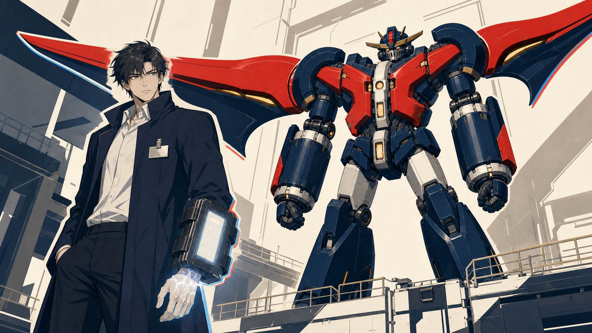
峰值增强已确认。 在A骨架上追加有限纸白切口与局部朱红/淡电蓝错版；只用于调查、机魂、终端、Cut-in与章节图。
C · 硬边厚涂型
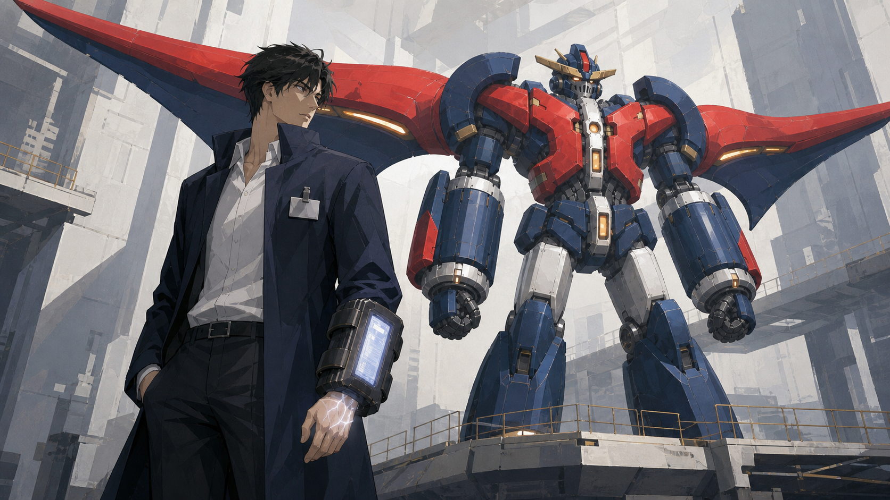
可选特绘已确认。 只用于海报、收藏卡、重大回忆和少量高成本特绘；不进入普通对话或批量Sprite。
AApproved Baseline
BApproved Peak Layer
CApproved Optional Key Art
A+B正式常态 / 峰值体系
| 使用层 | 正式执行 |
|---|
| 对话 / 普通剧情 / 单位立绘 | A的线压、大色块与硬阴影。 |
| 调查 / 机魂 / 必杀Cut-in / 章节图 | A骨架上提升到B的档案切色与局部错版。 |
| 海报 / 收藏卡 / 回忆特绘 | C作为可选高成本层，不反灌常态资产。 |
| 机体工程与玩具图 | 继续独立保存，不再冒充游戏内美术。 |
确认边界
A与B是同一绘画母语的常态/峰值两档，不做平均融合。C只保留为高成本特绘方向。v23三图的偶然脸、机体细节、场景布局和剧情动作不得写回正式设定。
同系列校准 v22 · 用户复审失败
完整规则与自检见 人物 / 机体同系列美术校准。用户复审确认：本轮只统一了二游式渲染参数，没有建立美术风格；人物仍是泛二游，馆守Z只减少产品高光，机体没有实质改善。以下资产全部保留为失败反例。
人物正比例 · 共同画法
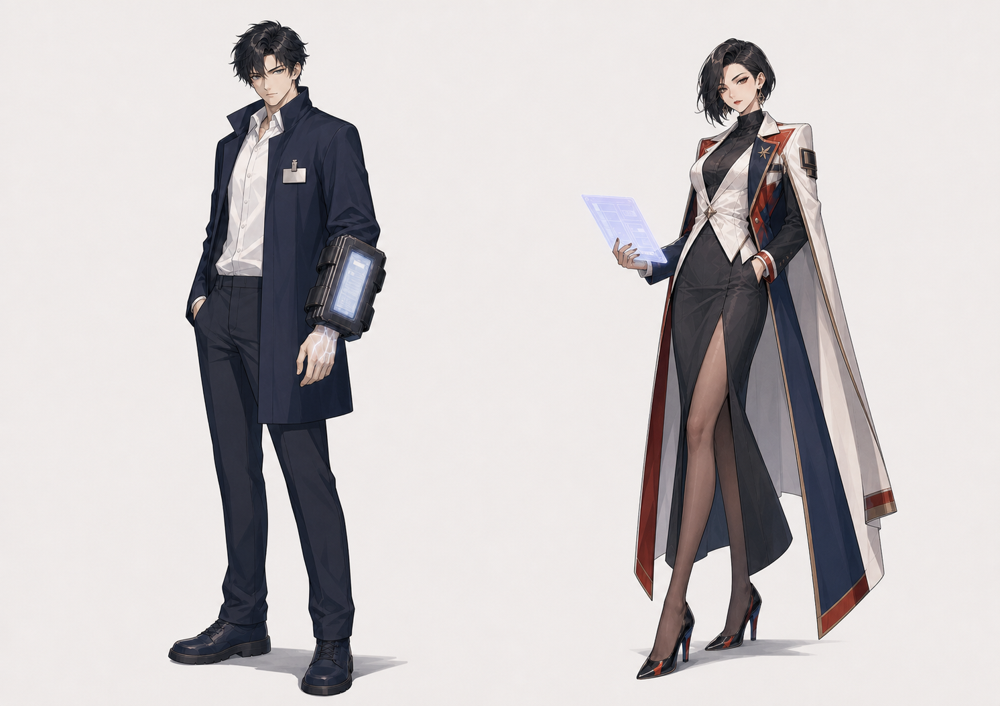
纪存与七海统一为炭海军蓝彩线、左上冷白主光、两级阴影和大衣片色块。终端、红蓝指挥外套与平板仍是身份锚；七海腰腹和裤装仍有少量生成式碎面。
馆守Z · 同一游戏表现层
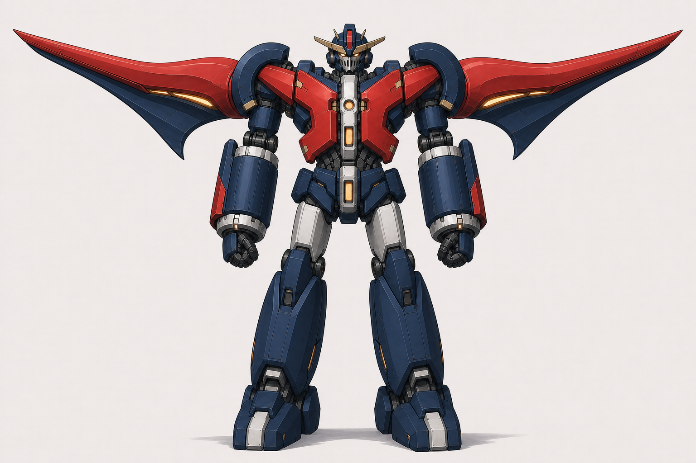
完整保留v21九头身、厚上身、断C真肩甲、红X胸、等长飞拳与A3双翼；面板线和产品高光约减半。材质已接近人物，但绝对正中构图仍残留目录展示感。
1套人物 / 机体彩线与光源
2级常态阴影上限
40–55%内部噪声删减
Rejected没有建立独立美术风格
Q版 · 从身份大形重建
96 px 实际读取
| 检查项 | 本轮结论 |
|---|
| 人物内部一致性 | 只共享了泛二游的线、光和色块密度，没有作者性。 |
| 人机一致性 | 馆守Z只降低了合金高光，仍是另一套目录式机体图。 |
| 生产可重复性 | 身份锚清楚，但尚未形成稳定转面和动作线稿。 |
| AI味 | 显著下降但未消失；人物默认精致脸、衣料碎面和机体目录对称仍需人工式收束。 |
当前门禁
本轮已否决。下一轮取消白底站姿，固定同一张人机同框叙事镜头，分别测试动画原画、档案套印和硬边厚涂三条风格路线；在其中一条形成辨识度前不扩生产资产。
纪存：少年感 → 成年青年
旧正比例
 短脸、大眼、蓬松刘海，加上挂绳、证件、肩带、垂带和多处金线，既偏幼也难跨姿态保持。
短脸、大眼、蓬松刘海，加上挂绳、证件、肩带、垂带和多处金线，既偏幼也难跨姿态保持。
新候选 · 方向通过
 约27–29岁视觉年龄。成熟来自骨相、肩颈、眼神和重心；终端成为唯一高密度配件。
约27–29岁视觉年龄。成熟来自骨相、肩颈、眼神和重心；终端成为唯一高密度配件。
3正比例服装层数上限
1高对比复杂配件
3.4Q版目标头身
27–29候选视觉年龄
馆守Z第十轮：W → X 三刀结构升级
完整规则见 断框身份与万机锁架机构。本轮不再发明一台新机体：W的头、红胸卡扣、厚上身、九头身长腿和等长巨型飞拳不动，只检验三个大零件能否让全身更像一台独占的核心主角机。
W稿 · 用户肯定的硬父级
保留的不是大致风格，而是完整身份：宽主眉冠与两根短天线、K式红胸卡扣、横向红肩前甲、厚上身、长腿和等长双飞拳。
X稿 · 断框锁架 · 当前建议
 真肩甲由完整轮胎感改为折面厚断框；红肩前甲外端扣入唯一缺口；每只前臂上端正好三块大旋封环；脚背只回声一次断框缺口。
真肩甲由完整轮胎感改为折面厚断框；红肩前甲外端扣入唯一缺口；每只前臂上端正好三块大旋封环；脚背只回声一次断框缺口。
1缺口/侧厚折面肩断框
3片/臂大型旋封环
1处脚背缺口回声
等长C01E02完整双臂
馆守Z第二十一轮：A结构 × A3翅膀肩甲保留融合
完整规则见 A结构 × A3翅膀肩甲保留融合。本轮只验证正面挂载层级：深蓝C形真肩甲在前，红肩前甲和黑色肩轴在中，背包短桥与A3翼根在后。
A肩部结构 + A3飞翼外形 · 当前结构候选
 完整保留A稿深蓝C形断框肩甲、红肩前甲和肩轴；A3厚红翼根退到肩甲之后，由被遮住的短背包桥连接。正面仍读到馆守Z自己的肩部身份，同时保留A3红色长S弧、墨蓝下凹弧和上扬翼尖。
完整保留A稿深蓝C形断框肩甲、红肩前甲和肩轴；A3厚红翼根退到肩甲之后，由被遮住的短背包桥连接。正面仍读到馆守Z自己的肩部身份，同时保留A3红色长S弧、墨蓝下凹弧和上扬翼尖。
3层肩甲 / 肩轴 / 背包翼根
2件独立C形真肩甲
A3只继承飞翼外段几何
1视图通过后再扩完整资产
馆守Z第二十轮：A3S原弧隐轨翼刃背包 · 用户否决
完整规则见 A3S历史页。这一轮恢复了A3翼弧，却让翼根与银色圆环占据肩轴，取消了A稿/WX本体的深蓝C形真肩甲。以下五图只保留为失败历史；其中A3翼面曲线可作为v21的几何输入，不再继承其肩部安装方式。
装着正面 · 翼根吞掉真肩甲
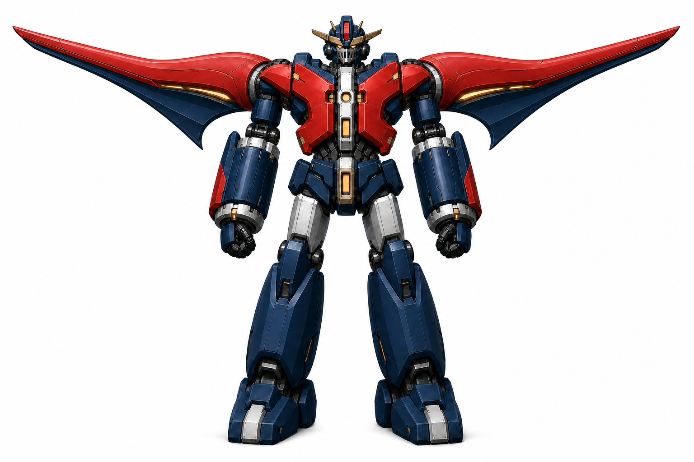
没有象牙包边、直板分层或外接小翼。红色厚根沿一条连续S弧收向上扬翼尖，墨蓝下翼保留包住双臂的大凹弧；只增加顺弧齐平装卸缝与藏在肩后的短月牙铰链。
装着背面 · 结构不再派生
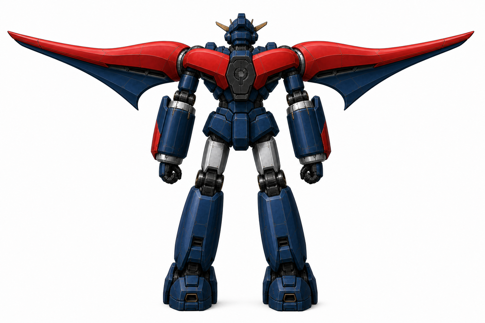
中央石墨锁架只占两肩胛之间；每侧翼根下方两条宽扁暗缝承担主推进，没有金框方盒、圆涡扇或航空发动机舱。裸机腰后与小腿姿态喷口仍是更小一级系统。
双拳翼刃 · 父级挂载错误
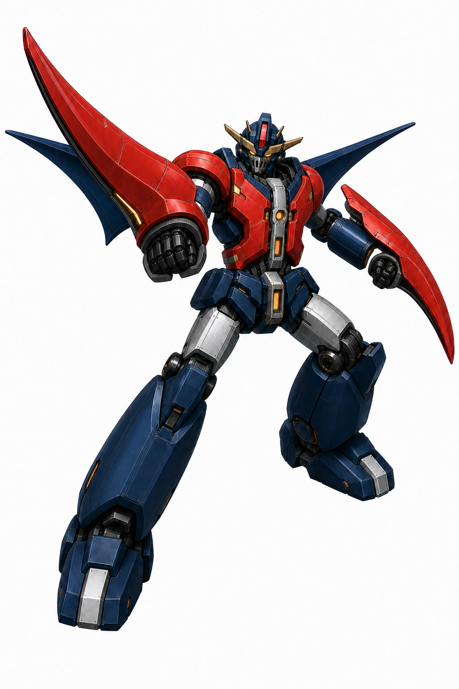
两片红色S壳按原尺寸整片拆下；D形托架只抱住拳背与掌根，拳套和前臂之间保留可见手腕间隙。刀口只是原下缘内藏的烟黑嵌条，背后留下的是原墨蓝下凹弧。
完整背包单体 · 需按独立肩甲重接
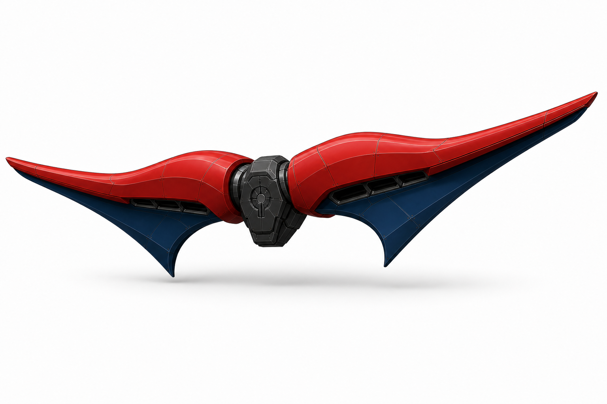
三分之四背视图把中央锁架、双月牙铰链、四条暗缝喷口与完整红蓝S翼放在同一件物体上；推进结构不再额外挂成一排盒子。
留守飞翼单体 · 仅保留形态参考
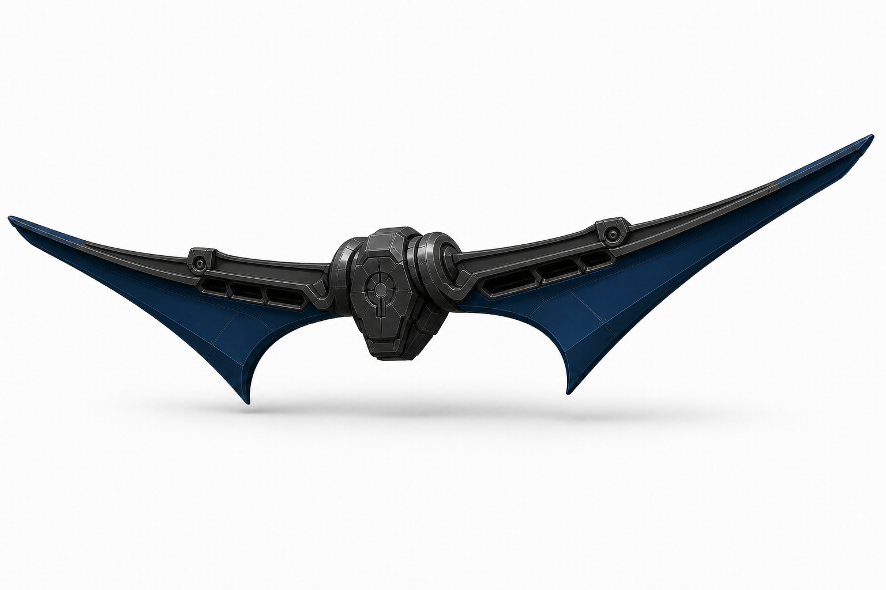
红壳拆除后，原本就在其下的墨蓝大凹弧翼向上转约12度并略伸根轨，保留足够翼展与分量；黑色顺弧轨道只说明装卸，不另造一对翅膀。
1条/侧A3连续S形外轮廓
4暗缝翼根主推进
0新增副翼与浅色包边
5视图正 / 背 / 手刀 / 两种单体
馆守Z第十八至十九轮 · 用户否决 / 失败历史完整保留
v18的圆形主喷口、外接小副翼和前臂刃不成立；v19虽然改成四矩形喷口和留守翼，但象牙包边、金框喷口、红背盒与直板化处理既显得土，也丢失了A3原弧。完整规则分别见 A3X历史页 与 A3R历史页。
馆守Z第十七轮：A双翼极端推演
完整规则见 A双翼极端推演。共同规则只有一条最重要：每侧恰好一片连续主翼，不再增加下副翼、上稳定翼或四翼X。两稿只测试主角感应该押在大幅度压迫，还是现代流线协调。
A2 · 霸弓双翼 · 霸气极端
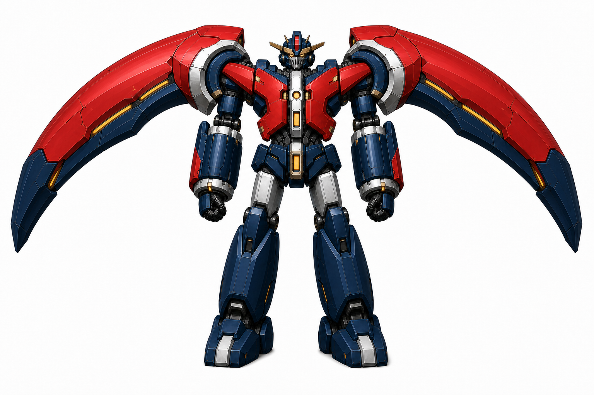
一对巨翼从厚断环根部高拱，再沿完整弓弧向外回压。幅度和重量最强，远看不会混成普通背包；风险是下压翼端可能产生仪式拱门或巨镰读取，装备也更容易压过本体。
A3 · 流线矢弓 · 完整装着否决 / 翼形保留
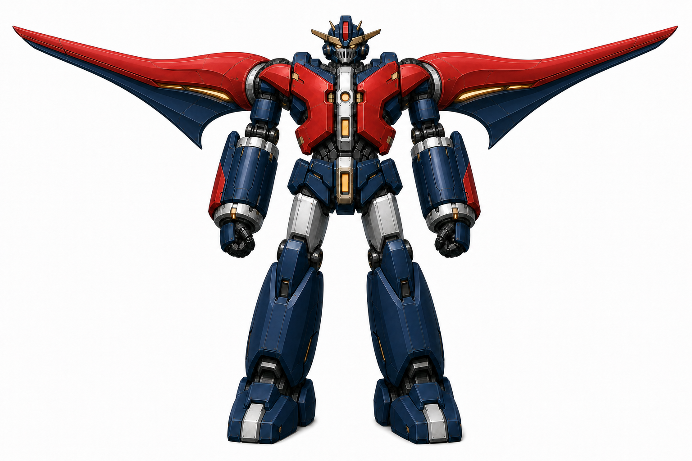
红色上壳与墨蓝下弧的S形翼面仍是当前翼形父级；但这张完整装着图用翼根圆环替换了深蓝C形真肩甲，整机方案已经否决。v21只移植翅膀外段，不继承肩部安装。
2翼恰好一对连续主翼
A2幅度 / 重量 / 压迫
A3翼形只供v21外段几何
0未选方向的扩图
馆守Z第十六轮：E2矢量喷翼一体背包 · 用户否决
完整规则见 E2矢量喷翼一体背包。它完成了左右喷射盒、四翼共轴和推力层级的机构验证，但用户确认整体不如A稿双翼。以下三图只保留为失败记录，不再作为当前飞翼方向。
装配正面 · 四翼剪影否决
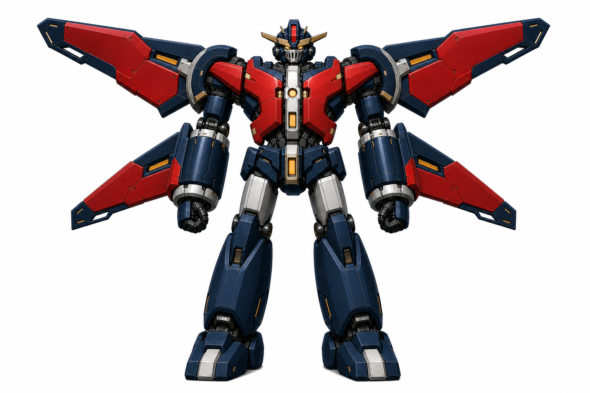
总翼展比E稿收小约15–18%，上主翼和较短下副翼形成开放X；视觉重量集中到两侧厚翼根、银色断环和琥珀热流槽。头冠、红胸、肩前甲与等长双飞拳保持无遮挡。
飞翼背包单体 · 仅保留机构记录
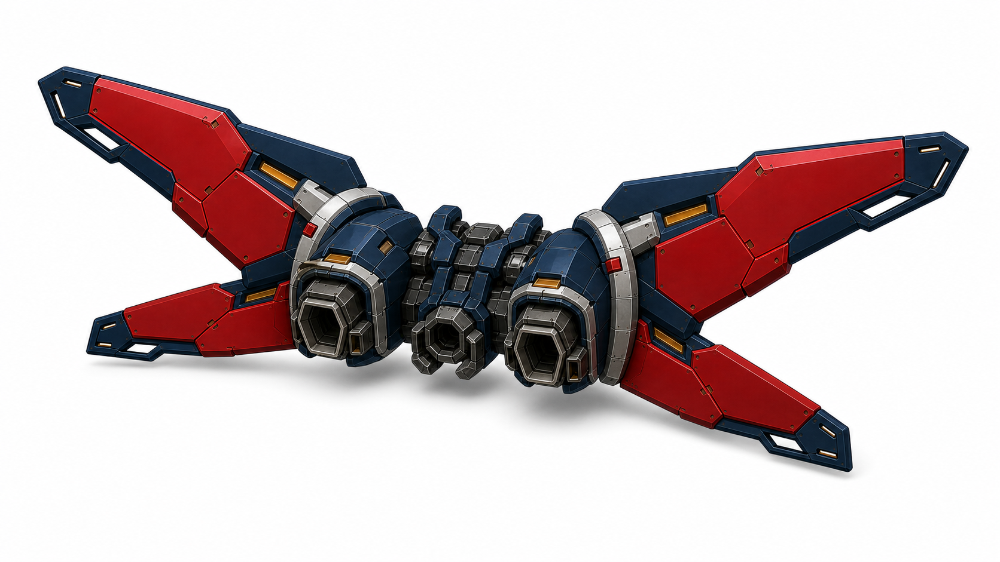
左右恰好两台短粗多边形喷射盒，各自用一枚断C矢量领同时承载上、下翼壳；后端为两枚大型梯形主喷口。中央小八角件是四爪耦合锁，不是第三台发动机。
装配严格背面 · 仅保留挂载记录
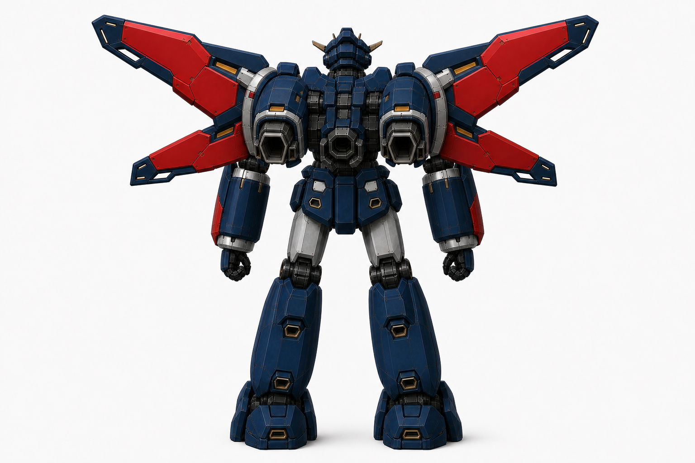
中央载体止于后腰以上，不拉长W/X短厚背躯；两枚背包主喷口显著大于后腰和小腿姿态喷口。四翼、断环、热流槽与单体图保持同一零件关系。
2短厚矢量喷射盒
4上下导流翼壳
1.8–1.9×总翼展相对肩宽
3视图正面 / 背面 / 单体
馆守Z第十五轮：大型飞翼正面剪影五案 · A重新成为硬父级
完整规则见 大型飞翼正面剪影五案。E曾进入E2，但四翼结果被用户否决；A的一对宽翼重新成为当前硬父级。B至E只保留为身份方向和反例记录。
A · 红弓宽翼 · 当前硬父级
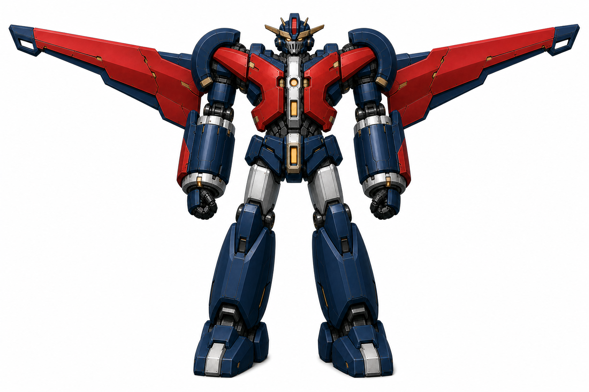
每侧一片长翼，取消所有上举小翼。优点是经典、稳定，本体仍是中心；风险是横向航空翼感较强，馆守Z独占机构较少。
B · 折刃双段翼 · 诊断稿
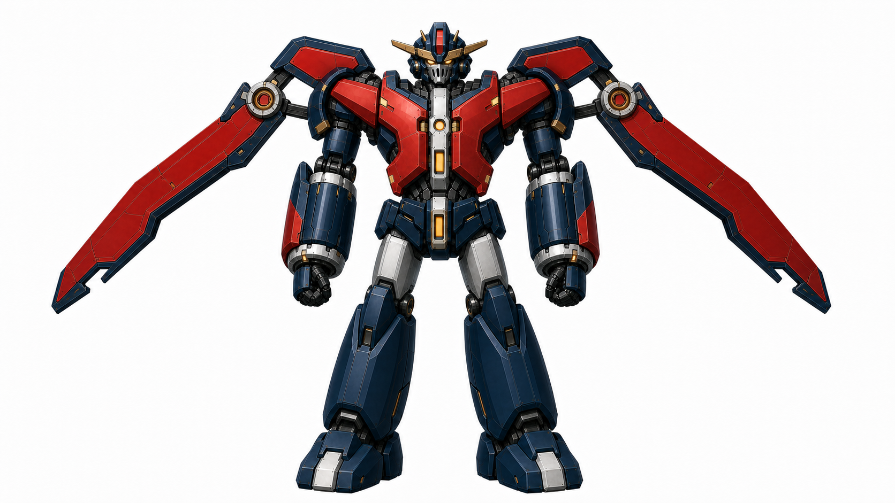
巨大圆环铰链让折叠玩具机构一眼可读，但长下折外翼容易像背后多出两条机械长臂，不建议继续精修。
C · 下掠披风翼 · 诊断稿
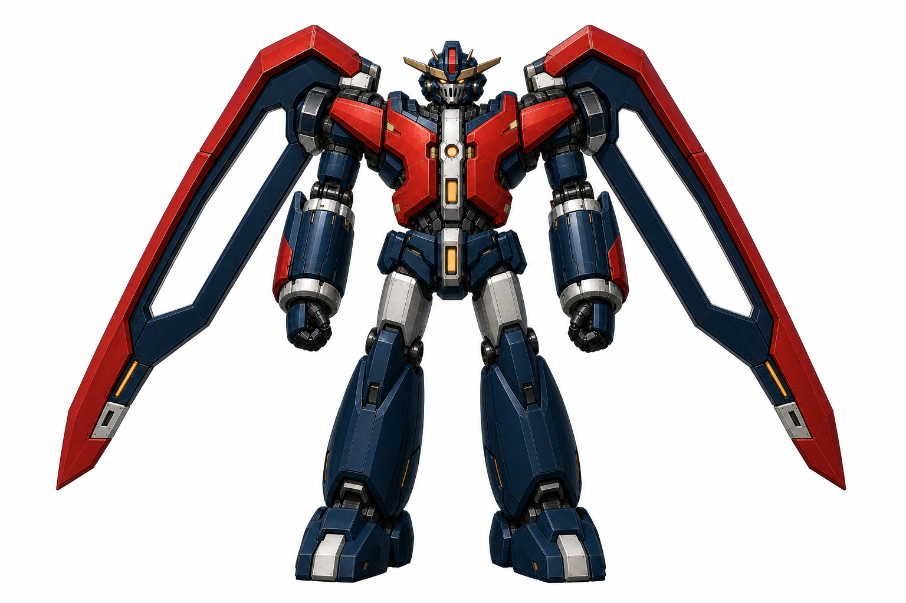
强化尺度和压迫感最大，但巨大开口框更像门架或巨臂，飞行速度感不足，不建议继续精修。
D · 分叉矢翼 · 历史身份方向
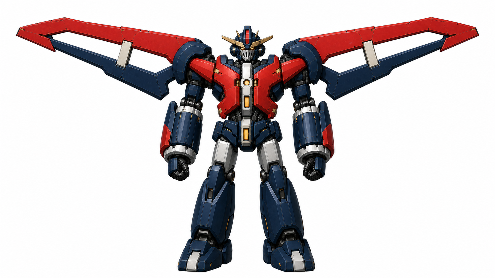
红上承力边、墨蓝下承力边、长菱形负空间与单枚白桥锁，把断框真正做成飞翼机构。专属性最强；若入选，建议总翼展再收约8%。
E · 平衡四刃X翼 · 历史概念父级
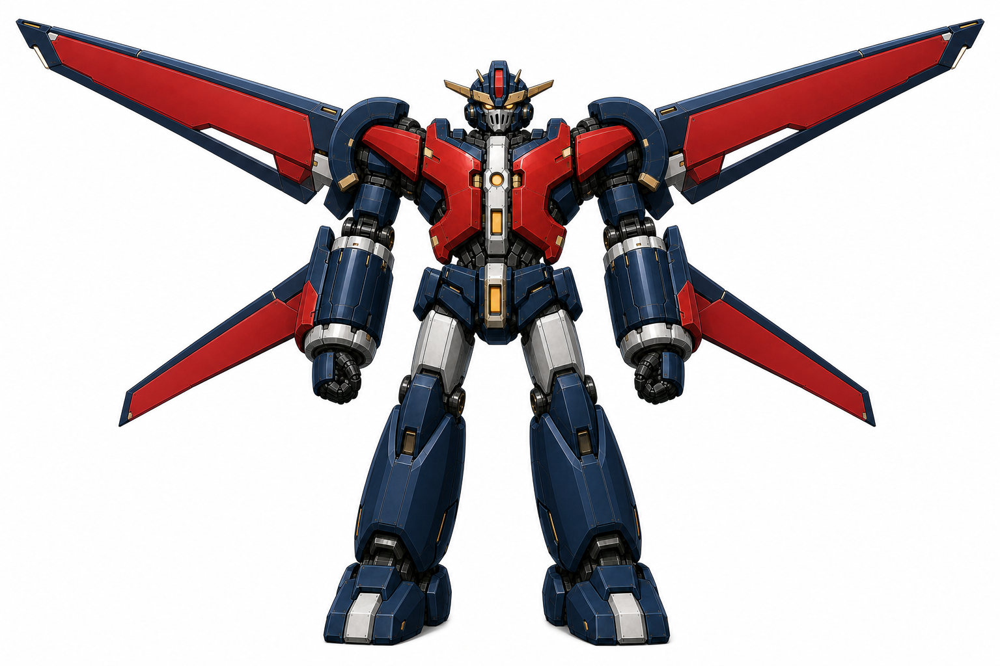
上下两对翼的不同长度与开放X读取成立，但用户指出四块直板“尺寸有余、特色不足”。其剪影逻辑已进入E2，直板造型本身不再作为当前候选。
A → A2/A3双翼硬父级
D历史身份方向
E / E2四翼方向否决
B / C诊断完成，不建议
馆守Z第十四轮：本体八喷口 × 飞翼造型已否决
完整规则见 裸机多点喷口与魔神系飞翼推进骨架。本体八喷口与外挂飞行装备的分层继续成立；但两块大红板和两根上举小翼被用户判定为笨拙，以下飞翼图只保留挂载、推力盒与背部接口的结构证据。
v14裸机 · 八枚姿态喷口 · 当前背面候选
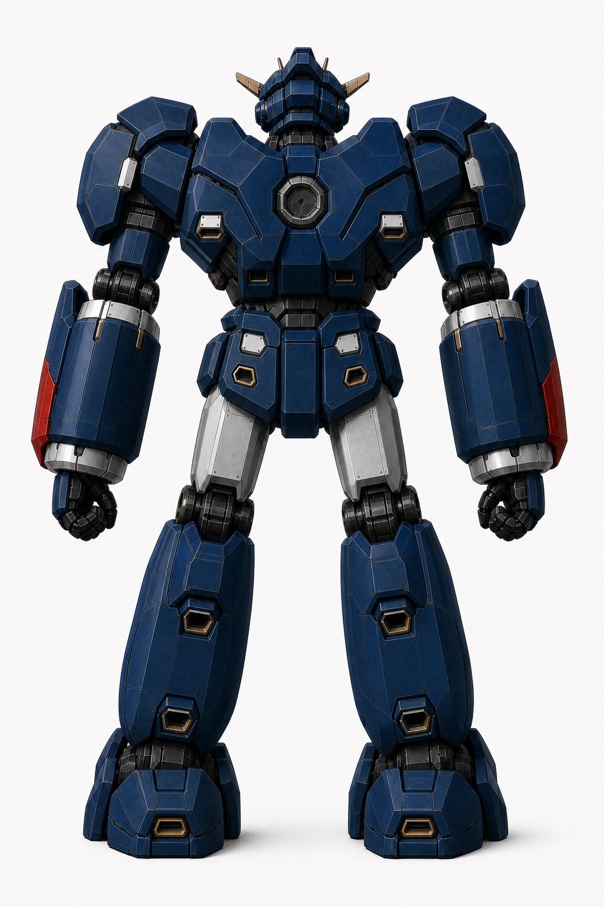
上背2、后腰2、小腿4，共八枚深腔小喷口；躯干与脚部的浅金槽只作被动散热。W母体短厚上背、九头身长腿和等长双拳不变，裸机仍不具备常态飞行能力。
v14飞翼推进骨架 · 造型否决
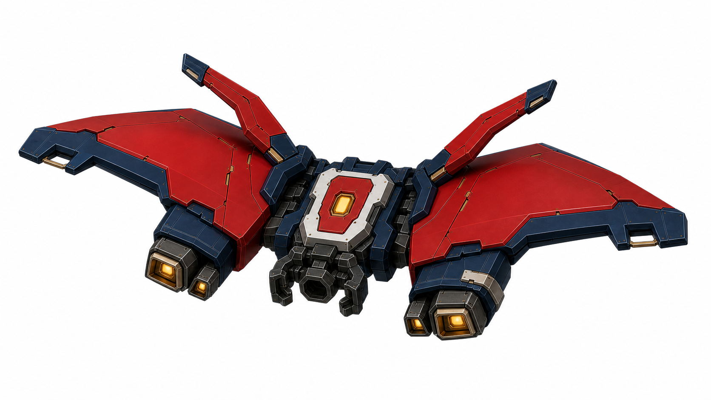
双宽主翼先建立魔神系飞行强化识别，双短稳定翼形成不完整断X；翼端矩形缺口、红白中央锁体和短粗多边形推力盒把它收回馆守Z自己的断框语言。
挂载严格背面 · 仅保留结构参考
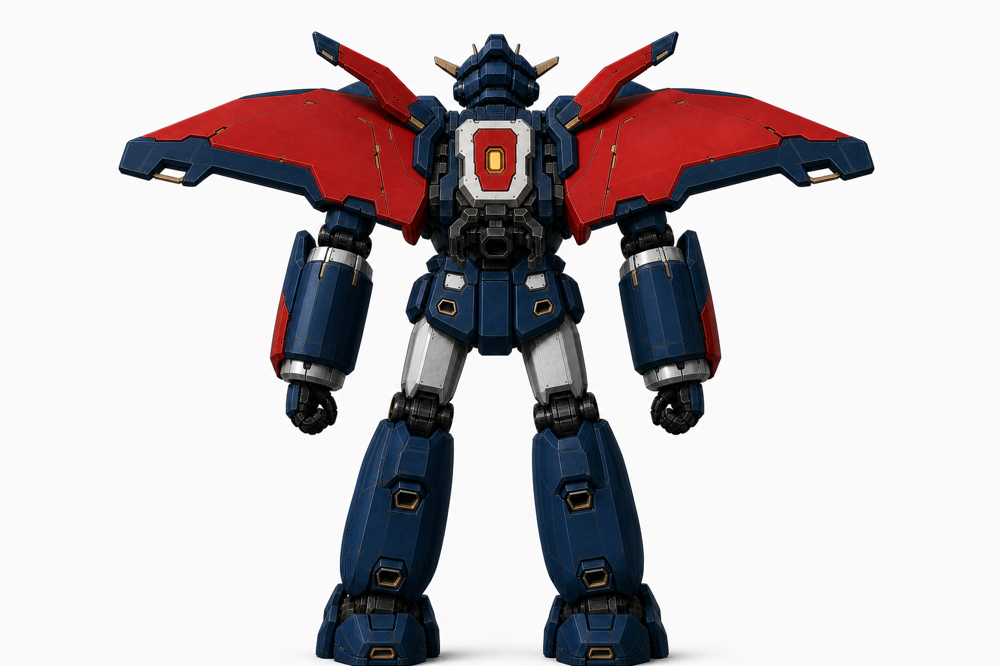
宽幅单机出图避免巨翼把本体压矮。中央挂体止于后腰以上，九头身与厚上身同时成立；正后视优先检验“主角机飞行强化”剪影。
挂载后侧视 · 仅保留推力盒参考
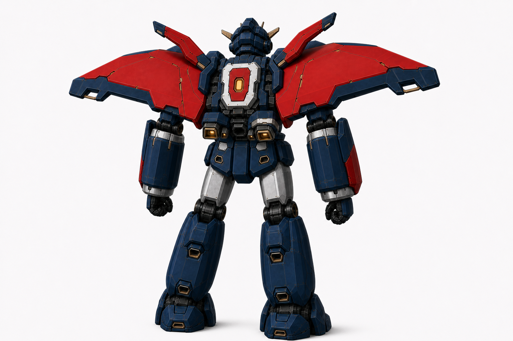
翼根下方两台短粗主推力盒明确可见，不读成火箭筒或航空吊舱；本体小腿喷口继续作为更小一级的姿态系统。完整双臂仅为工程对照。
2 + 2 + 4本体八枚姿态喷口
约2.2×主翼相对肩宽
2宽 + 2短不完整断X翼组
1次C01直线离舰边界
馆守Z第十三轮：W短厚背面 × “整机飞拳”历史方案
完整规则见 W母体短厚背面与“整机飞拳”推进骨架。Z稿裸机仍是v14的短厚背躯父级；外挂方案则因用户澄清“本体小喷口 + 魔神系大型飞翼”而退出当前方向，只保留为设计演进记录。
Z稿 · W母体裸机背面 · v14结构父级
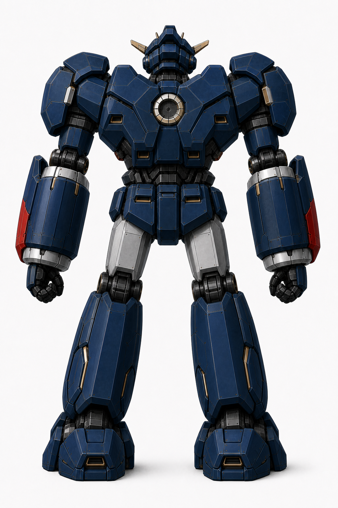
纵向H脊删除；后颈至腰带重新压回短厚比例。宽肩胛甲以短倒V/断X甲缝组织上背，经过两级大甲片迅速收进高腰，九头身只由长腿承担。
Z稿 · “整机飞拳”推进骨架 · 已被v14替代
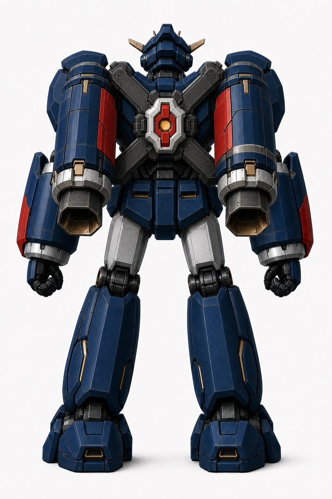
短粗X承力架连接中央红白锁核；左右推进胴沿用飞拳体量、红锁甲、银白旋封环和巨大多边形喷口。视觉命题是把整台馆守Z发射成第三枚飞拳。
短厚W/X上背比例
0纵向长脊与航空圆筒
3片/胴飞拳式旋封环
1次C01直线发射边界
馆守Z第十二轮：YR与航空双筒 · 用户否决
完整规则见 窄背体、模块挂架与本体喷口。Y的严格侧面比例不动；旧背面的宽墙感、封闭中脊和无喷口问题由YR纠正。本体四枚小喷口只负责姿态制御，强推进仍来自C01一次性退役推进骨架。
Y旧背面 · 已被替代
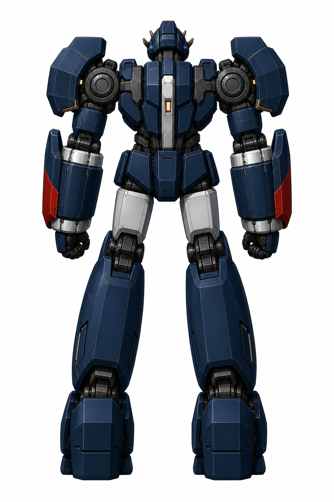
两枚大肩轴、外张肩胛盖和封闭归档脊同时占宽，背部读成一整面墙；没有外接装备承力点，也没有裸机姿态制御喷口。
YR稿 · 窄背模块接口 · 拉长背脊，否决
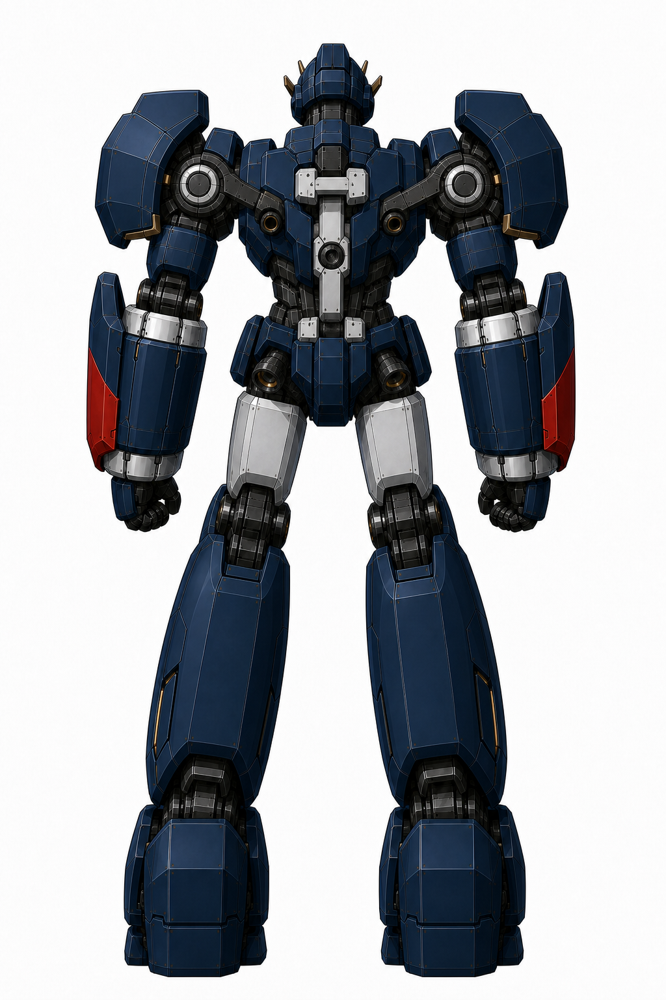
躯干实体收窄，外宽仍由独立断框肩承担；肩轴缩小内沉，H形四点挂架、中央耦合口与肩根/后腰四枚小姿态喷口保持裸露可读。
-12–15%背部实体宽度
-20%肩轴候选直径
4点贴身承力挂架
4枚裸机姿态喷口
C01退役推进骨架 · 航空双筒，否决
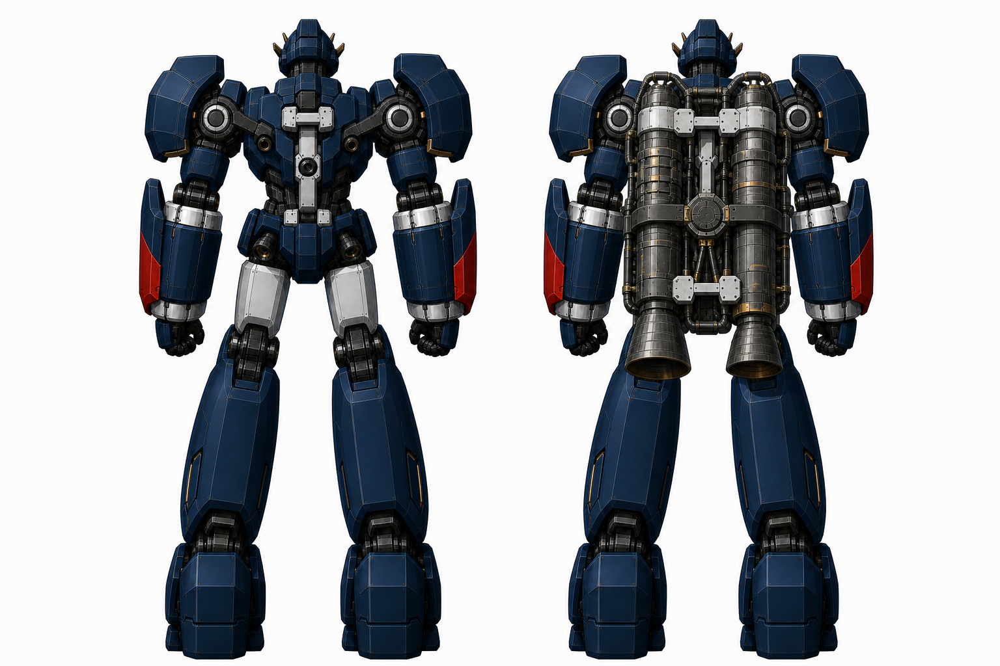
左：YR裸机四点接口。右：四枚锁爪和中央耦合盖接入窄幅双直喷筒骨架。此图只验证装配，不是C01E04剧情时点；正式剧情图仍须表现原右前臂已毁、巡展臂与一次直线点火。
馆守Z第十一轮：侧面成立，旧背面进入历史
完整规则见 侧面与背面结构综合。Y稿第一次建立了严格侧背共同尺度；用户确认其侧面比例，独立左侧面继续作为父级。以下同图与旧背面只保留为结构演进证据，当前背视图以第十四轮v14八喷口稿为准。
Y稿侧背同图 · 历史共同父级
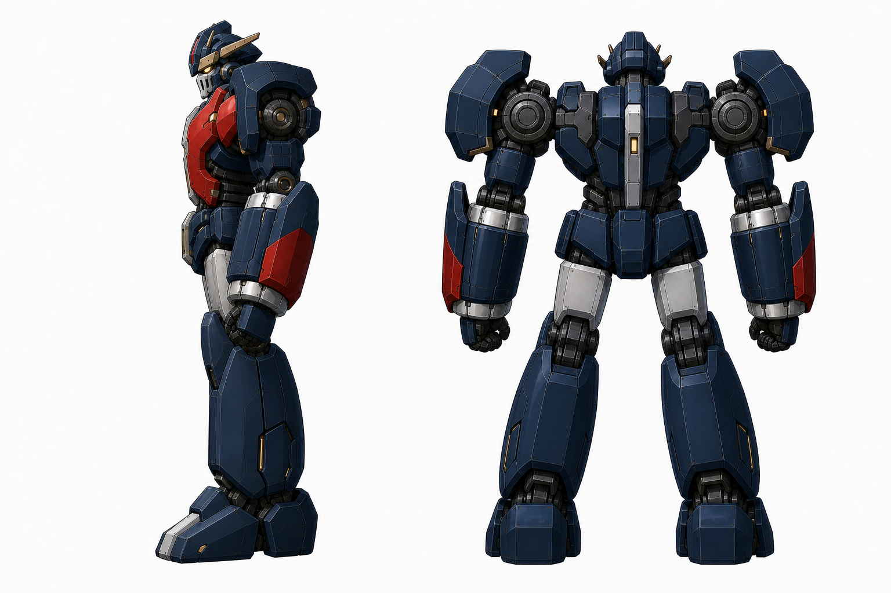
左：90度左侧面，肩断框绕三轴肩座承力，红肩前甲只占前半部。右：180度背面，没有背包，贴身归档脊通过肩胛承力盖连接双肩大轴。
Y稿 · 独立左侧面 · 比例保留
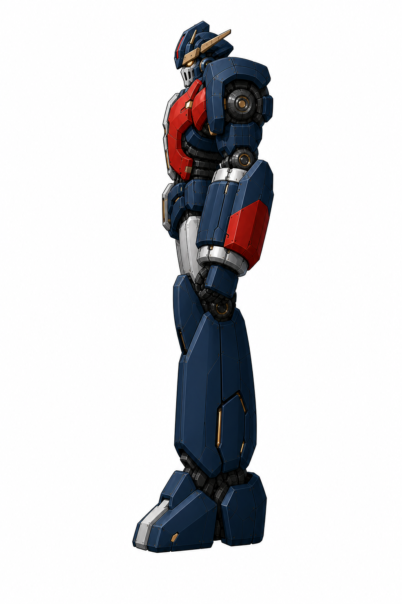
红胸与肩前甲在侧面呈“前重后收”，没有环绕到背部；肩断框的厚度、前下缺口和飞拳分离环均可读。
Y稿 · 独立背面 · 被YR替代
对称肩断框、大同心肩轴和贴身中脊承担背向身份；红色只是原前臂侧甲的自然可见厚度，没有新红背甲。
0独立背包与翼膀
1条贴身归档脊
2枚对称大同心肩轴
完整C01E02等长双飞拳
万机锁架：同一机构四状态
这不是新武器、变形或强化形态。左至右依次验证锁架如何成为封存正面符号、启动动作、右火箭拳解锁机构和C01E03之后可读的右肘伤口。机体自身右侧始终位于观者左侧。
四状态最终验证板
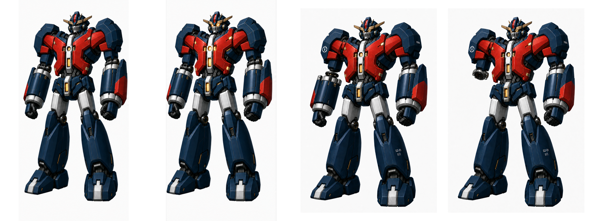
封存 → 启动 → 右火箭拳解锁 → 原右前臂丧失。最终板由四张合格单图确定性拼合，已排除首次同图生成中的灰色钻头和腰胯假损伤。
馆守Z第九轮：K厚上身 × 横向红肩前甲（X父级）
完整规则见 K上半身、红肩前甲与九头身综合设计。K不再只是“体量参考”，而是腰带以上的硬母体；新红甲是肩关节前方的独立肩前甲，不是真正肩甲。
K稿 · 上半身硬母体
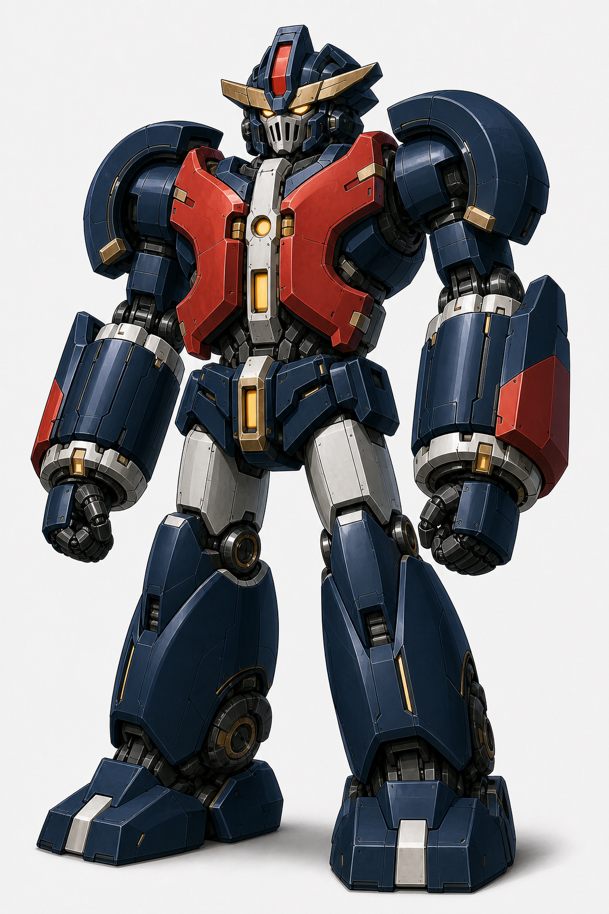
锁定深厚胸腔、红色双片胸口卡扣、象牙白中轴、巨大深蓝C形肩甲和粗壮飞拳。后续只修复双臂镜像性，不重设这套上身。
V稿 · 结构中间稿
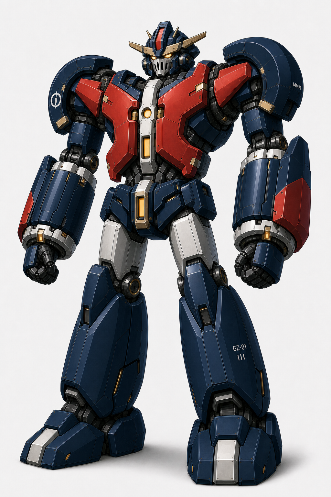
K红胸卡扣、深蓝真正肩甲与厚上身已恢复，九头身也不再以缩小上身换取。但红肩前甲偏竖直、偏小盾，只作结构过渡。
W稿 · 横向红肩前甲 · X硬父级
红肩前甲压低、加宽并横向延伸，与K红胸卡扣连成宽阔的上身红色主符号；狭铰链缝与独立深蓝C形肩甲仍清楚。长腿完成九头身，上身和飞拳不变薄。
8.8–9腰以下拉长后目标头身
K锁定腰带以上体量
1块/侧独立红色肩前甲
等长C01E02完整双臂
头雕校正：宽主眉冠 + 两根短辅助天线
保留用户选定的完整深蓝头盔、中央红额脊、银色脸谱和宽金色主眉冠。参考Z高达的“主天线与次级天线分层”方法，只增加正好两根短辅助天线，不复制其具体V角或头部轮廓。
L头雕 · 用户选定头盔基础
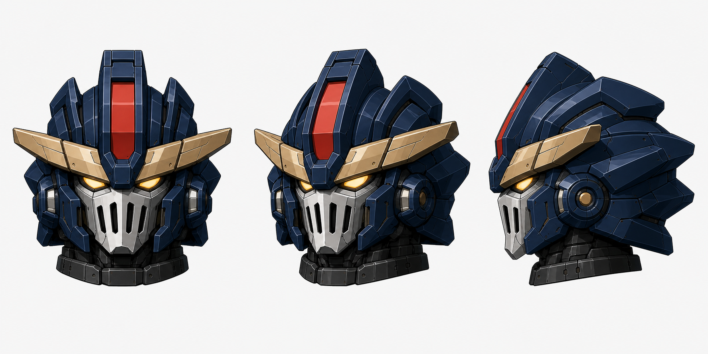
锁定完整盔体、宽主眉冠、中央红额脊、脸谱、耳轴和后头体积；不再将它重做成圆帽或枢轴横条。
W头雕三角度 · 当前证据
两根短辅助天线置于中央冠后上方，长度和线径均明显从属于宽主眉冠；三个角度零件数量与根部位置一致。
1组宽主眉冠
2根短辅助天线
20–25°辅助天线外上展角
3处稀疏标识区
馆守Z第八轮（已否决）：九头身 × 铰接X
Q至U把肩前甲错读成真正肩甲，并用四块X楔替换了K的红胸卡扣。它们不再是生产父级；第八轮规则只作失败历史，腰以下拉长、J式铰链与贴花密度才可局部参考。
Q稿 · 上半身误读
下肢比例可参考，但四块胸前X楔抹掉K的红色双片卡扣，深蓝真正肩甲也被红白斜片替换。
S稿 · 跨角度不稳定
剪式天线跨角度零件数量不稳定，而且身体沿用已否决的Q解法；只作历史实验。
T稿 · 用户否决
九头身和双臂等长是局部成果，但整个上半身继承Q的错误，丢失K的胸口红扣与厚度；不再是当前建议。
≈9目标头身
3块/侧肩甲大质量上限
3处高对比标识区
等长C01E02完整双臂
第八轮天线试验（历史）
T头雕三角度 · 已被W取代
枢轴横冠虽能跨角度保持，但不再符合“用户选定宽主眉冠 + 两根短辅助天线”的新裁决。
R稿 · 钥匙齿/鹿角上限
端部上折把机构说得太直白，出现钥匙齿和机械鹿角读取；否决。
U稿 · 目录缺口过度
只加一个缺口仍会形成钥匙齿。万机馆身份无需强迫每个零件都做目录造型；否决。
馆守Z第七轮（历史）：经典 ≠ 复古 ≠ 朴素
现代主角机需要一个全身主符号、一个招牌动作机构和一个完整头盔架构。本轮以“断环 + 目录钥”为主符号，以“旋封飞拳”为招牌机构；详细原则见 经典现代综合设计。
K稿 · 重冠展架型 · 当前上半身父级
第一次建立完整头盔和肩胸大符号。当前锁定其厚胸、红卡扣、深蓝C形肩甲和飞拳体量；双前臂红块不镜像的生成偏差不继承。
L稿 · 断环飞拳型
肩弧收紧，左右旋封飞拳同构等长，动画招牌动作最清楚；全身图头部很强，但放大后侧后盔片层数偏多。
P稿 · 低断拱冠型 · 历史方案
低断拱冠与紧凑断环身体只作历史参考。当前上半身已回归K硬母体，头部则由用户选定的L头盔基础取代。
1断环 + 目录钥主符号
3片旋封飞拳外壳
3块P稿头盔主质量
等长L/N完整双臂
头盔剪影收敛：圆顶、角化与低断拱
这里不是三选一，而是同一身体上的受控区间：N偏圆，O偏角，P把中央红钥锁为最高点并让侧冠只负责向后展开。
N稿 · 偏圆的结构前身
三块盔壳已经完整，细节也克制；但上轮廓过于顺滑，远看仍可能读成普通圆顶头盔。
O稿 · 角化上限
深蓝断拱能产生强黑影，但抬升过高后像兽角、虫颚或怪人头；作为失败上限，不进入派生。
P稿 · 低断拱冠
侧冠降低约三成、末端钝化并向后扫，中央红钥独占最高点；比N醒目，比O克制，也避开金色V角和星芒勇者冠。
头雕三视验证与上下界
P头雕三角度 · 历史证据
正面、三分之四与侧面均保持红钥最高、低侧冠并入后脑；证明这是一顶完整头盔。当前只用于评审，不是锁定三视。
L头雕三角度 · 用户选定基础
完整深蓝盔壳、嵌入式红额脊、宽主眉冠和银色脸谱已由用户选为硬基础。W只增加两根短辅助天线，不改这套头盔身份。
M稿 · 圆帽朴素下界
删除全部侧盔结构后，头部立即退化为圆帽、眉条和脸谱的组合。它是失败对照，不进入后续派生。
馆守Z第六轮：A母版 × 现代魔神系方法
现代化不再靠加角和换亮色，而是保留经典的冠、脸、红胸与飞拳，再用同一套功能结构贯穿全身。详细拆解见 现代魔神系设计审视。
A稿 · 第二轮母版
厚重体量、三段冠、胸门、肩环与粗前臂均成立；弱点是肩以下仍有较多通用重装机器人语言，金边和枪状前臂外挂也偏旧。
J稿 · 诊断参考
脸谱和粗飞拳完成魔神投射，但小圆盔、金属圆环、对称胸门和普通四肢仍显复古、朴素且无趣；不再作为生产父级。
A不动体量与三段冠
3组转轴 / 展门 / 脊柱语法
−33%+金属金面积
等长C01E02完整双臂
馆守Z第五轮：A母体 × 现代色板 × 强主角冠
本轮已废弃。 H/I把“特色”误解成头冠复杂化，身体语言没有同步变化；星芒勇者感、零散钴蓝与失衡的头身关系均不再继承。
H稿 · 废弃
A的厚重感完整保留，五段冠最醒目、最有攻击性；现代钴蓝与冷白让大体块不闷。风险是冠片略像星芒/勇者系。
I稿 · 废弃
身体与H一致，冠片缩短加宽并连接深蓝眉架；仍然是第一视觉锚，但更建筑化、更原创，也更像能做成实体玩具。
6.5–6.7A母体头身
5段主角机头冠
集中金属色只在冠与机构
等长C01E02完整双臂
馆守Z第四轮：C轮廓 × A体量 × 现代色板
融合不是平均拼装：保留C的开放肩弧、斜轨胸闸、现代负形和流线，只吸收A的胸腔、拳臂、承重腿与玩具零件厚度。钴蓝只用于转折面，香槟金属只用于真实机构。
F稿 · 偏轻盈融合
现代色板和机构融合成立，钴蓝转折面让墨蓝不再闷；但胸、拳、腿的份量仍更接近C稿。
G稿 · 增重融合
约6.8–6.9头身，胸腔、上臂、前臂与腿部明显增重；开放负形、窄腰、楔形足和低金色仍在。是第四轮当时的工作建议。
6.8–6.9G稿目标头身
≈12%前臂增厚
少量钴蓝转折面
等长C01E02完整双臂
馆守Z第三轮：去除复古超合金“土感”
A/B解决了机构与商品性，但红蓝金均分、金边包甲、圆环肩、圆筒前臂和产品渲染仍显老派。本轮先改变体块、负形与配色权重，再单独测试二维画法。
C稿 · 现代化上限
开放肩弧、克制金属点色、斜轨红闸片与连续肢体曲线，去旧感最彻底；风险是略偏潮流实系机。
D稿 · 现代经典平衡
收紧肩弧并恢复头、胸、拳的重量，保留C稿的现代配色、负形和低金色占比。是第三轮当时的机设工作建议。
E稿 · D机设二维画风
原则上沿用D机设，改用线条层级、平涂色块与两级赛璐璐阴影；用于判断“土感”是否还来自产品渲染。
≈3%香槟金属占比
0金边包甲
开放肩部转台负形
分离机设 / 画风判断
馆守Z上一轮：图三仅作比例与配色参考
旧正比例
 材料可信，但面板、铆钉、标签、掉漆在全身同密度出现，头冠—胸门—主拳的主角视线被噪声削弱。
材料可信，但面板、铆钉、标签、掉漆在全身同密度出现，头冠—胸门—主拳的主角视线被噪声削弱。
图三 · 机设未通过
 清晰度和比例较好，但轮廓仍偏通用，圆肩、胸门与缺臂尚未形成可操作、可销售的主角机结构。
清晰度和比例较好，但轮廓仍偏通用，圆肩、胸门与缺臂尚未形成可操作、可销售的主角机结构。
7正比例目标头身
12–16可复述大体块
4Q版识别锚
0基础层随机划痕
馆守Z第二轮：C01E02完整双臂收藏母版
两稿都是图鉴、海报、收藏卡与玩具开发级精细稿，不是游戏内直接缩小使用的版本。共同锁定万机冠、展门胸、转台肩、目录飞拳和展台足五个商品锚点。
A稿 · 机构感更强
肩环、胸门和飞拳导轨最显眼，玩具玩法丰富；前臂外侧导轨略像外挂枪，胸门更接近机械展柜。
B稿 · 主角机读取更干净
移除枪状外挂，强化头部横向冠形，胸门改为更完整的大型装甲百叶；腿部和前臂表面更利于后续简化。
5独有商品锚点
4右臂生命周期模块
2收藏 / 游戏主规格
等长C01E02左右完整手臂
A / B / C 生产强度分配
| 资产层 | 风格强度 | 承担内容 |
|---|
| 走图 / Q版 | A 极简 | 轮廓、脚点、3个身份锚；B只作可开关触发FX |
| 对话立牌 | A | 脸、手、姿态、大色块与两级硬阴影 |
| 游戏机体全身 | A | 与收藏母版同骨架，删除约45–60%不改变轮廓的内部细节 |
| 调查 / 机魂 / Cut-in | A+B | 有限档案切口、局部错版、微白机魂光与事件焦点 |
| 海报 / 收藏卡 / 重大回忆 | A+B 或 C | C单独立项，不提高常态资产密度 |
| 收藏母版 / 玩具工程 | 独立工程表现 | 可动机构、接口、材料和结构一致性，不冒充游戏内画风 |
下一批验收门
先从锁定身份母版制作A版标准资产，再在同一构图上追加可关闭的B层，并从A版重画96/128 px Q版。三者通过身份、大形、同系列、强度、生产性、文字和转面一致性七项检查后，才能扩展到其他角色、机体、场景与道具。